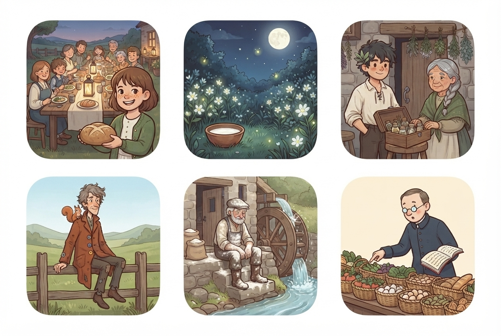
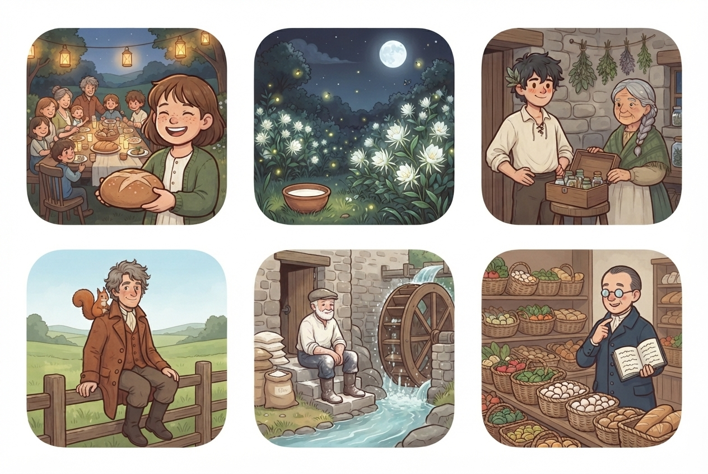
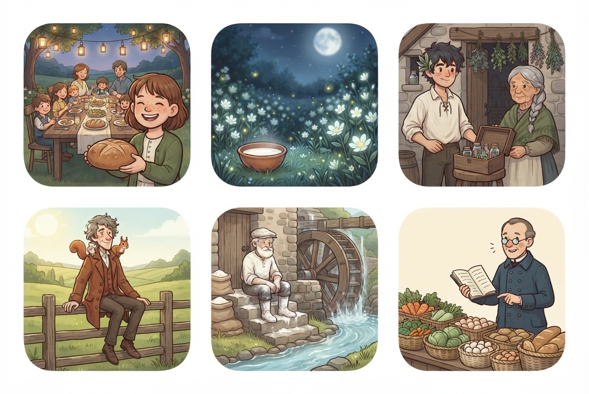

Green frame = the pick used in the game. To swap: python3 .claude/skills/openart-pictures/fetch.py pick sheet61-album-ch6 <version>, then import again.



Six square storybook album pictures for chapter 6 (family table, night garden bowl of milk, Greenstem and Wren, Lark with squirrel, the miller at his water wheel, Quill counting baskets). Full prompt: see history zmOF40nEtWQwBQScLSa1.